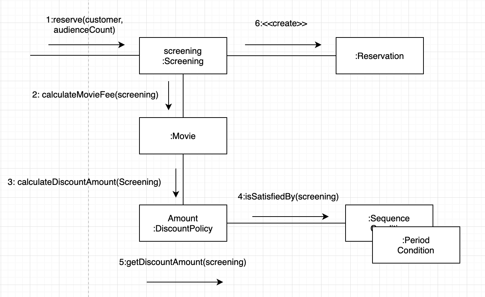
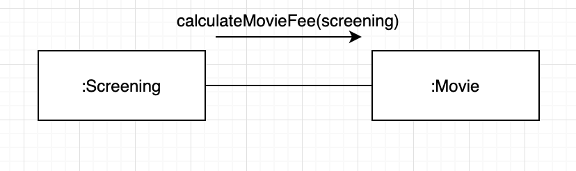
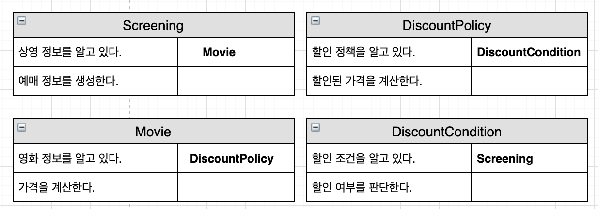
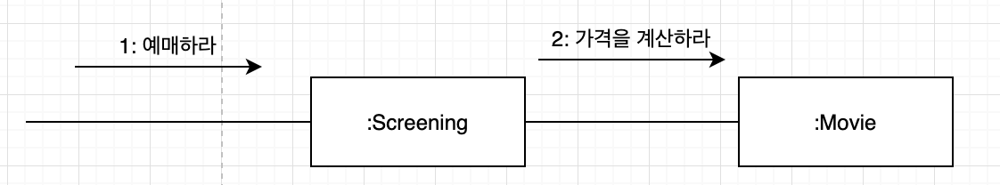
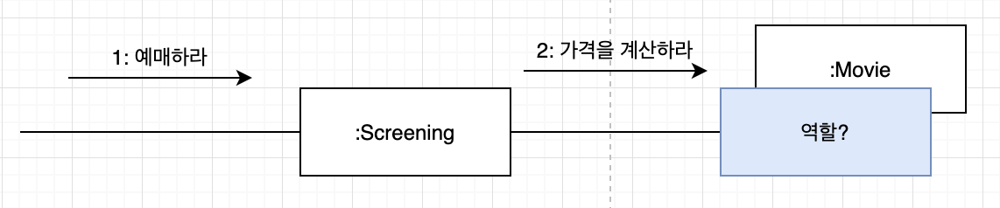
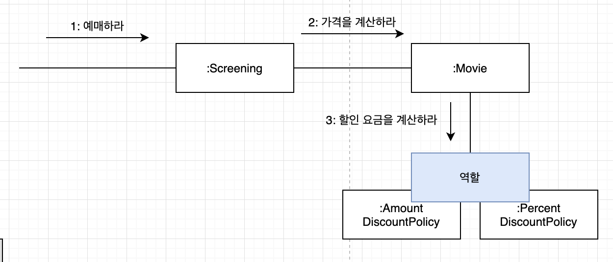
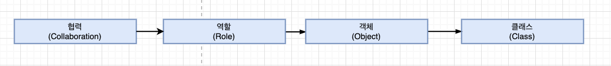
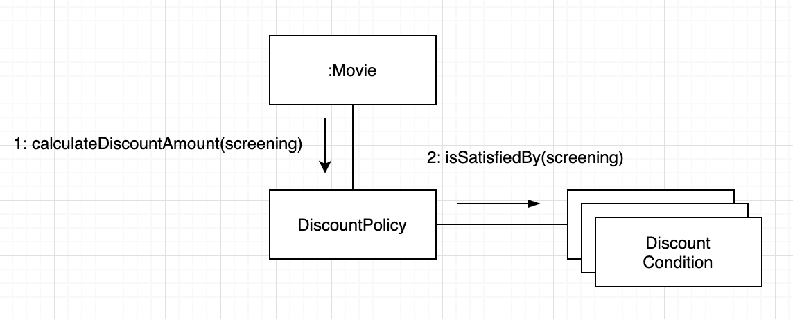

“OBJECTS 3장”
객체지향 패러다임의 관점에서 핵심은 역할(role), 책임(responsibility), 협력(collaboration) 이다.
- 객체지향의 본질은 협력하는 객체들의 공동체를 창조하는 것
- 협력을 위해 어떤 역할과 책임이 필요한지 고민하지 않은 채 너무 이른 시기에 구현에 초점을 맞추는 것은 변경하기 어렵고 유연하지 못한 코드를 낳는 원인이 된다.
협력
영화 예매 시스템 돌아보기

- 협력 : 객체들이 애플리케이션의 기능을 구현하기 위해 수행하는 상호작용
- 책임 : 객체가 협력에 참여하기 위해 수행하는 로직
- 역할 : 객체들이 협력 안에서 수행하는 책임들의 모임
협력
- 메세지 전송 : 객체 사이의 협력을 위해 사용할 수 있는 유일한 커뮤니케이션 수단
- 객체는 다른 객체의 상세한 내부 구현에 직접 접근할 수 없기 때문에 오직 메시지 전송을 통해서만 자신의 요청을 전달
- 메시지를 수신한 객체는 메서드를 실행 해 요청에 응답
- 객체가 메시지를 처리할 방법을 스스로 선택

- 자신이 할 수 없는 일을 다른 객체에게 위임하면 협력에 참여하는 객체들의 전체적인 자율성을 향상시킬 수 있음
- 객체를 자율적으로 만드는 가장 기본적인 방법은 “내부 구현을 캡슐화” 하는 것
정리해보자. 자율적인 객체는 자신에게 할당된 책임을 수행하던 중 필요한 정보를 알지 못하거나 외부의 도움이 필요한 경우 적절한 객체에게 메시지를 전송해서 협력을 요청한다. 메시지를 수신한 객체 역시 메시지를 처리하던 중에 직접 처리할 수 없는 정보나 행동이 필요한 경우 또 다른 객체에게 도움을 요청한다. 이처럼 객체들 사이의 협력을 구성하는 일련의 요청과 응답의 흐름을 통해 애플리케이션의 기능이 구현된다.
협력이 설계를 위한 문맥을 결정한다
- 협력
- 객체의 행동을 결정하는 것 = 객체가 참여하고 있는 협력
- 협력이 바뀌면 객체가 제공하는 행동 역시 바뀜
협력이 존재하기 떄문에 객체가 존재하는 것
객체의 상태를 결정하는 것 = 행동
- 객체의 상태는 그 객체가 행동을 수행하는 데 필요한 정보가 무엇인지로 결정
- 객체는 객체가 수행하는 행동에 필요한 상태도 함께 가지고 있어야 함
1 | public class Movie { |
상태는 객체가 행동하는데 필요한 정보에 의해 결정되고, 행동은 협력 안에서 객체가 처리할 메시지로 결정된다.
결과적으로 협력이 객체를 구성하는 행동과 상태 모두를 결정한다.
따라서 협력은 객체를 설계하는데 필요한 일종의 문맥을 제공한다.
책임
책임이란 무엇인가
“협력에 참여하기 위해 객체가 수행하는 행동”
- 객체의 의해 정의되는 응집도 있는 행위의 집합
- 객체가 유지해야 하는 정보와 수행할 수 있는 행동에 대해 개략적으로 서술된 문장
- 하는 것 (doing) 과 아는 것(knowing)

- 협력 안에서 객체에게 할당한 책임이 외부의 인터페이스와 내부의 속성을 결정함
- 책임과 메시지의 크기는 다름
단순한 책임이 여러개의 메시지로 분할되기도, 커다란 책임으로 자라나기도 함
객체지향 개발에서 가장 중요한 능력은 책임을 능숙하게 소프트웨어 객체에 할당하는 것 -크레이그 라만
협력이 중요한 이유는 객체에게 할당할 책임을 결정할 수 있는 문맥을 제공하기 때문
적잘한 협력 -> 적절한 책임 -> 적절한 객체에게 할당 -> 단순하고 유연한 설계
객체의 구현 방법은 책임보다는 덜 중요하며 책임을 결정한 다음에 고민해도 늦지 않음
책임 할당
- INORMATION EXPERT(정보 전문가) 패턴
- 책임을 수행하는 데 필요한 정보를 가장 잘 알고 있는 전문가에게 그 책임을 할당

- 객체지향 설계는 협력에 필요한 메시지를 찾고 메시지에 적적할 객체를 선택하는 반복적인 과정을 통해 이루어짐
- 이런 메시지가 메시지를 수신할 객체의 책임을 결정
- 결정된 메시지가 객체의 퍼블릭 인터페이스를 구성
책임 주도 설계
- 협력을 설계하기 위해서는 책임에 초점을 맞춰야 함
- 책임 주도 설계(Responsibility-Driven Desing, RDD)
- 책임을 찾고 책임을 수행할 적절한 객체를 찾아 책임을 할당하는 방식으로 협력을 설계하는 방법
- 책임을 할당할 떄 고려해야 하는 두가지 요소
- 메시지가 객체를 결정
- 행동이 상태를 결정
메시지가 객체를 결정한다
객체가 메시지를 선택하는 것이 아니라 메시지가 객체를 선택하게 했다
메시지가 객체를 선택하게 하면
- 객체가 최소한의 인터페이스를 가질 수 있게 됨
- 추상적인 인터페이스를 가질 수 있게 됨
객체가 충분히 추상적이면서 미니멀리즘을 따르는 인터페이스를 가지고 하고 싶다면 메시지가 객체를 선택하게 하라.
행동이 상태를 결정한다
- 객체를 객체답게 만드는 것은 객체의 상태가 아니라 객체가 다른 객체에게 제공하는 행동
- 객체의 행동이 아니라 상태에 초점을 맞추는 것 > 가장 쉽게 빠지는 실수
- 객체의 내부 구현이 객체의 퍼블릭 인터페이스에 노출 > 캡슐화 저해 > 내부 구현 변경 시 퍼블릭 인터페이스 변경 > 객체를 의존하는 클라이언트에 영향
- 데이터-주도 설계(Data Driven Design) : 객체의 내부 구현에 초점을 맞춘 설계 방법
중요한 것은 객체의 상태가 아니라 행동이다.
역할
역할과 협력
- 역할 : 객체가 어떤 특정한 협력 안에서 수행하는 책임의 집합

어떤 이유로 역할 이라는 개념을 이용해 설계 과정을 더 번거롭게 만드는 것일까? 어차피 역할이 없이도 객체만으로 충분히 협력을 설계할 수 있는것 아닌가?
유연하고 재사용 가능한 협력
- 역할을 통해 유연하고 재사용 가능한 협력을 얻을 수 있음
- 코드 중복
- 문제를 해결하기 위해서는 객체가 아닌 책임에 초점을 맞춰야 함
역할은 다른 것으로 교체할 수 있는 책임의 집합이다.

- 동일한 책임을 수행하는 역할을 기반으로 두 개의 협력을 하나로 통합할 수 있음
- 불필요한 중복 제거
- 협력이 유연해짐
책임과 역할을 중심으로 협력을 바라보는 것이 바로 변경과 확장이 용이한 유용한 설계로 나아가는 첫 걸음이다.
객체 대 역할
객체에 관해 생각 할 때 ‘이 객체가 무슨 역할을 수행하는가?’ 라고 자문하는 것이 도움이 된다.
하지만 어떤 협력에서 하나 이상의 객체가 동일한 책임을 수행할 수 있다면 역할은 서로 다른 방법으로 실행할 수 있는 책임의 집합이 된다.
다시말해 협력에 적합한 책임을 수행하는 대상이 한 종류라면 간단하게 객체로 간주한다. 만약 여러 종류의 객체들이 참여할 수 있다면 역할이라고 부르면 된다.

설계 초반에는
적절한 책임과 협력의 큰 그림을 탐색하는 것이 중요
역할과 객체를 명확하게 구분하는 것은 그 다음 문제
애매하다면 단순하게 객체로 시작하고 반복적으로 책임과 협력을 정제해가면서 필요한 순간에 객체로부터 역할을 분리해 내는 것이 가장 좋은 방법
협력을 위해 어떤 책임이 필요한지를 이해하는 것
다양한 객체들이 협력에 참여한다는 것이 확실하다면 역할로 시작하라. 하지만 모든 것이 안개 속에 둘러싸여 있고 정확한 결정을 내리기 어려운 상황이라면 구체적인 객체로 시작하라.
- 역할 모델링
역할과 추상화
추상화의 장점

- 세부사항에 억눌리지 않고도 상위 수준의 정책을 쉽고 간단하게 표현
- 추상화는 상황을 단순화함
- 역할은 협력을 추상화함
- 객체에게 중요한 것은 행동이라는 사실
- 설계를 유연하게 만듬
배우와 배역
협력이라는 문맥안에서 역할은 특정한 협력에 참여해서 책임을 수행하는 객체의 일부다. 일반적으로 역할은 객체가 협력에 참여하는 잠시 동안에만 존재하는 일시적인 개념이다. 역할은 모양이나 구조에 의해 정의될 수 없으며 오직 시스템의 문맥 안에서 무엇을 하는지에 의해서만 정의될 수 있다.
역할은 객체의 페르소나다.
- 객체는 여러 역할을 가질 수 있음
- 특정한 협력 안에서는 일시적으로 오직 하나의 역할만 보여짐